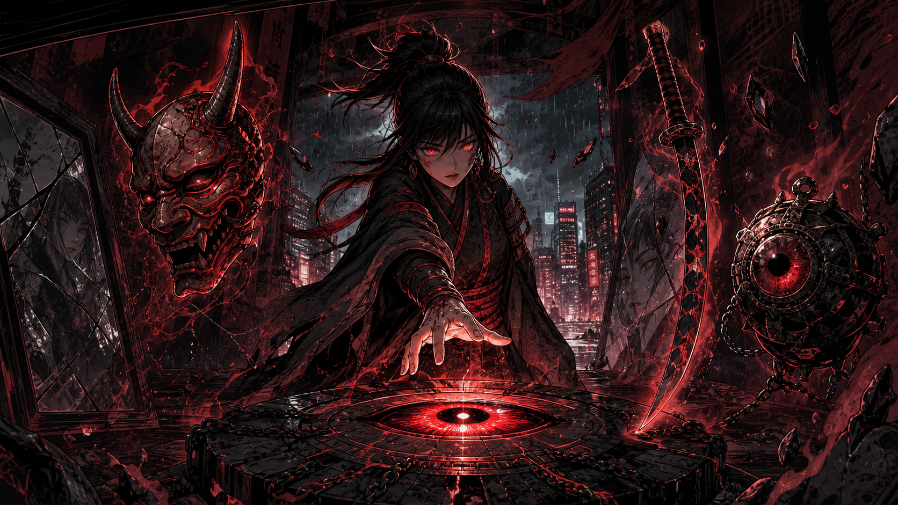
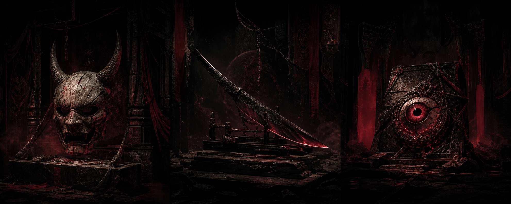
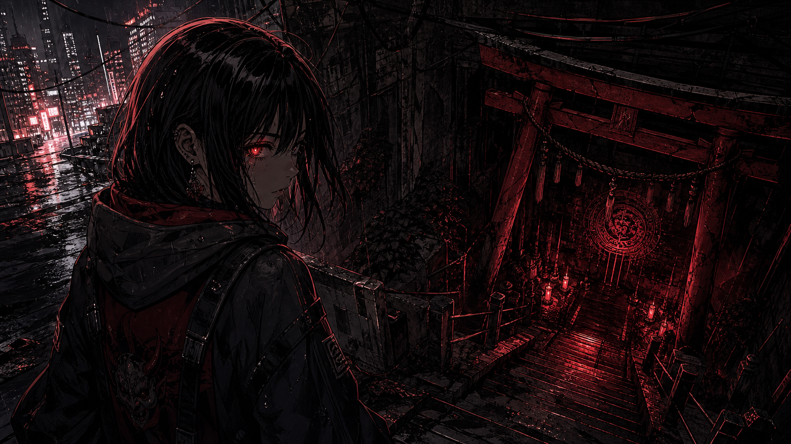
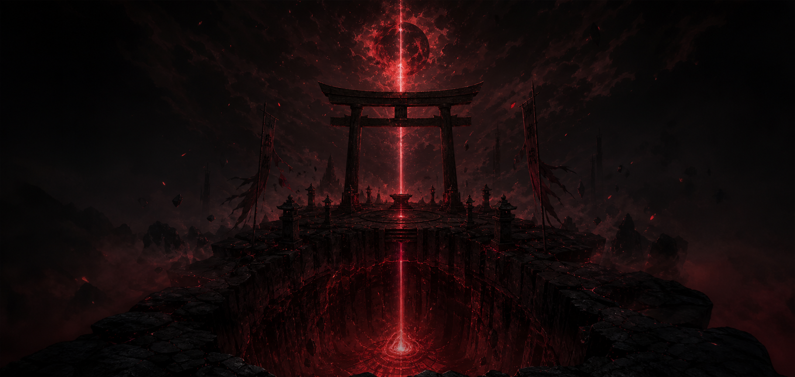
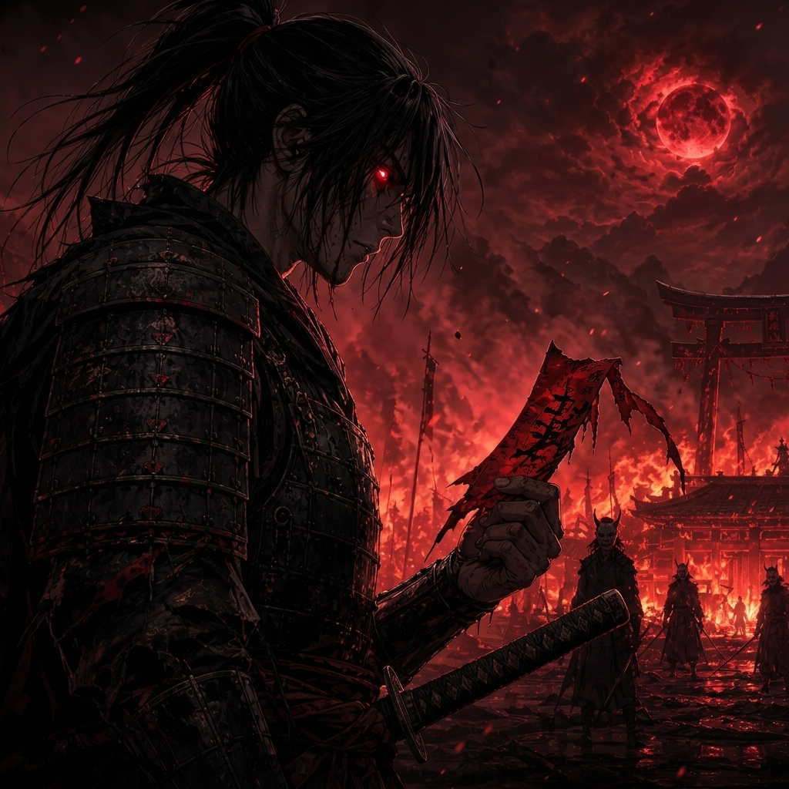
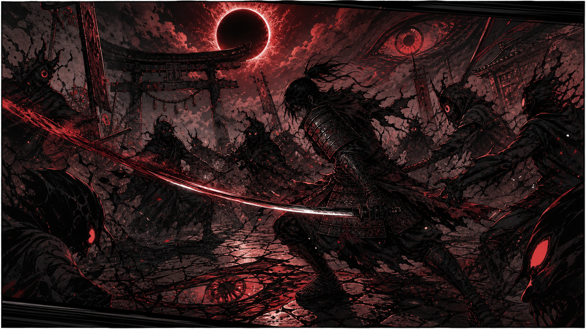
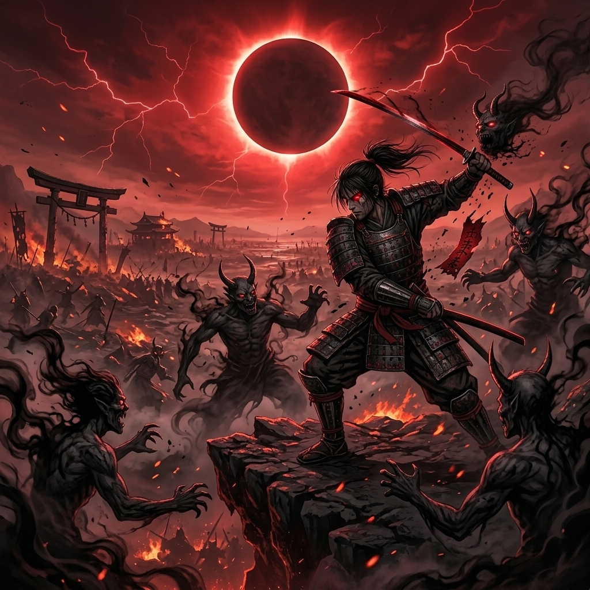
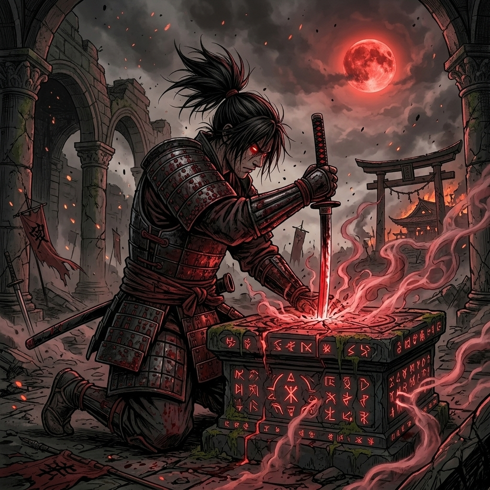

ГЛАЗ
ПОМНИТ
ПОМНИТ

После Великого Затмения граница между миром людей и царством духов стала тоньше волоса.

Мрачная аниме-летопись о Рэн, девушке, в чьём левом глазу запечатан последний свидетель исчезнувшего клана.
Ей кажется, что она видит красные вспышки в темноте, но глаз помнит войну, предательство и договор, который нельзя нарушить.



Каждая ночь вытаскивает из Рэн чужую память: зов под городом, имя без лица и врата, которые не должны открываться.


Каждый взмах меча разрывал дымовую плоть теневых демонов. Самураи бились не ради победы, а ради спасения памяти своего рода.
Если падёт последний хранитель, мир забудет даже само слово «ёкай».

Поднявшийся барьер запечатал демонов, но поглотил души воинов, превратив их в пепел и красные искры.
Когда Рэн сорвала бумажный талисман со старинной шкатулки, гигантский призрачный воин восстал над небоскрёбами.
Теперь каждая камера, каждый экран и каждый телефон становятся маленькими воротами.
Три реликвии удерживают память исчезнувших ёкаев. В каждой остался голос хранителя и цена древнего договора.
Что ты замечаешь первым в тёмной комнате?
Пять решений покажут, понял ли ты легенду. Выбери путь Рэн и узнай, чем закончится ночь.